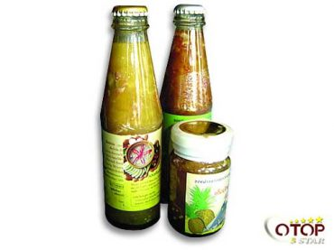
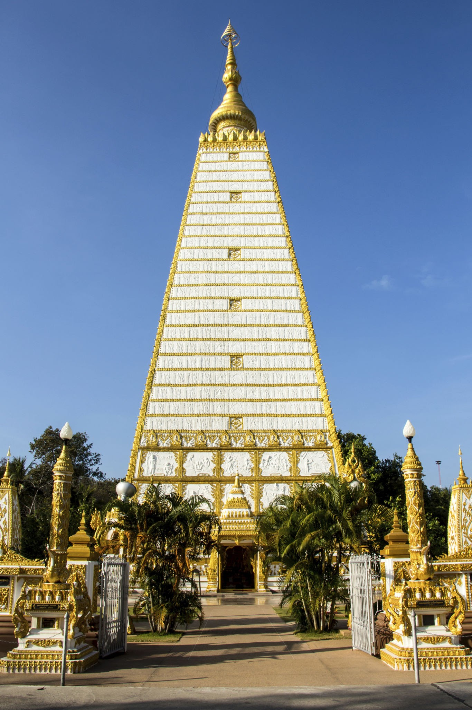
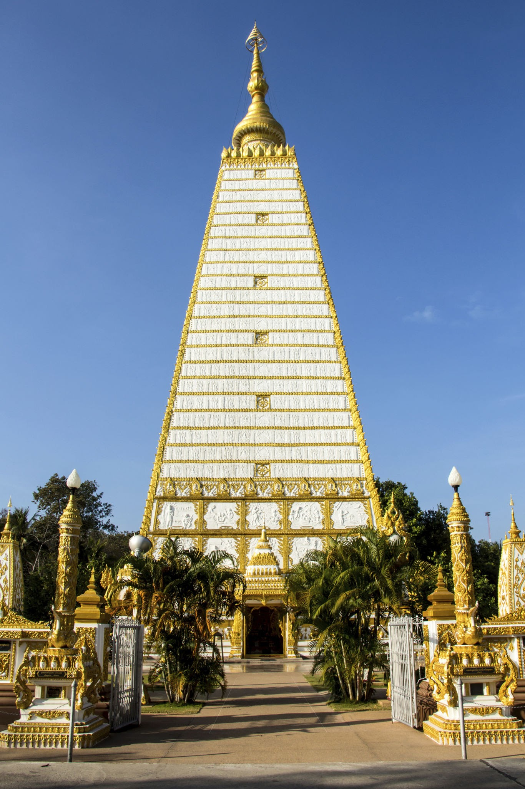

|
แนะนำสถานที่ท่องเที่ยวจังหวัดอุบลราชธานี
|
นายสฤษดิ์ วิฑูรย์
ผู้ว่าราชการจังหวัดอุบลราชธานี
|
แนะนำสถานที่ท่องเที่ยว
|
สินค้า OTOP จังหวัดอุบล
|
เสือท่องเที่ยวจังหวัดอุบลฯ
|
|
|
อุทยานแห่งชาติแก่งตะนะ
อุทยานแห่งชาติแก่งตะนะ ตั้งอยู่ในท้องที่ อำเภอโขงเจียม และอำเภอสิรินธร จังหวัดอุบลราชธานี สภาพ
พื้นที่ทั่วไปเป็นที่ราบและเนินเขาเตี้ยๆ โดยมียอดเขาบรรทัดเป็นจุดสูงสุด ความสูงประมาณ 543
เมตรจากระดับน้ำทะเลปานกลาง มีแม่น้ำมูลและแม่น้ำโขงไหลผ่านตามแนวเขตทางด้านทิศเหนือไปออกประเทศลาว
บริเวณแก่งตะนะจะมีสายน้ำที่เชี่ยวและลึก อีกทั้งยังมีถ้ำใต้น้ำหลายแห่ง จึงทำให้มีปลาอาศัยอยู่ชุกชุม
ตรงกลางมีโขดหินขนาดใหญ่เป็นเกาะกลาง มีเนื้อที่ประมาณ 50,000 ไร่ หรือ 80 ตารางกิโลเมตร คำว่า “ตะนะ”
จากการเล่าขานตามความเชื่อของชาวบ้านและประชาชนทั่วไป เดิมมาจากคำว่า “มรณะ”
เนื่องจากบริเวณแก่งตะนะนี้มีกระแสน้ำไหลที่เชี่ยวกราก และมีโขดหินใหญ่น้อยอยู่ทั่วไป
ตลอดจนมีถ้ำใต้น้ำอยู่หลายแห่ง ชาวบ้านที่สัญจรทางน้ำหรือออกจับปลา
มักประสบอุบัติเหตุเสียชีวิตอยู่เป็นประจำ ชาวบ้านจึงเรียกแก่งนี้ว่า “แก่งมรณะ”
ตามแรงบันดาลจากสภาพของสายน้ำที่ไหลผ่านแก่งนี้ ซึ่งต่อมาเรียกว่า “แก่งตะนะ”
จึงตั้งเป็นชื่ออุทยานแห่งชาติ
|
|
ผ้าไหมอุบลได้รับการสืบทอดมาจากบรรพบุรุษ ประมาณ 180 ปี มาแล้ว ในปี 2537
สำนักงานพัฒนาชุมชนอำเภอตระการพืชผล
ได้จัดตั้งกลุ่มทอผ้า มีสมาชิก 45 คน ดำเนินการในรูปแบบคณะกรรมการ มีการทอผ้าไหมหมี่ข้อ หมี่ขั้น ซิ่นทิว
หรือผ้าไหมมัดหมี่ลายดั้งเดิม ต่อมาได้มีการพัฒนาลวดลายผ้า ทำให้คุณภาพของผ้ามีคุณภาพดีขึ้น
|
|
|
|
อุทยานแห่งชาติผาแต้ม มีเนื้อที่ครอบคลุมอยู่ในท้องที่อำเภอโขงเจียมอุทยานแห่งชาติผาแต้ม
มีเนื้อที่ครอบคลุมอยู่ในท้องที่อำเภอโขงเจียม อำเภอศรีเมืองใหม่ และอำเภอโพธิ์ไทร จังหวัดอุบลราชธานี
ประกอบด้วย …
|
|
หมูหยองหมูหยอง เป็นผลิตภัณฑ์ที่ใช้เป็นของฝากสำหรับมาเยี่ยมชมจังหวัดอุบลราชธานี
สามารถเก็บไว้ได้นาน
กระบวนการขั้นตอนการผลิต
1.นำเนื้อหมูขั้นดีมาล้างให้สะอาด นำมาอบให้แห้งแล้วปั่นเป็นเส้นปรุงรสให้พอดี สามารถเก็บไว้ได้นาน
จุดเด่นของผลิตภัณฑ์
รสชาดอร่อย เก็บไว้ได้นาน
ราคา กิโลกรัมละ 150 บาท
|
วัดสิรินธรวรารามภูพร้าว หรือ วัดภูพร้าว อีกชื่อหนึ่งที่นิยมเรียกกันก็คือ วัดเรืองแสง
วัดนี้จะตั้งอยู่บนเนินเขาสูง ในอำเภอสิรินธร จังหวัดอุบลราชธานี
เป็นการจำลองสภาพแวดล้อมของวัดป่าหิมพานต์หรือเขาไกรลาศ บนยอดเขาเราจะสามารถมองเห็นพระอุโบสถสีปัดทอง
ตั้งเด่นงดงาม ด้านหลังของอุโบสถจะเป็นงานจิตรกรรมเรืองแสงสีเขียวของต้นกัลปพฤกษ์
อยู่ด้านหลังของอุโบสถในเวลากลางคืน สวยงามมาก ซึ่งบางเวลาถ้าไปแล้วโชคดีได้เจอกับดาวเรืองแสงรอบๆ อุโบสถ
และขอแนะนำให้ไปในคืนเดือนมืด
เพราะถ้ายิ่งมืดเราก็จะสามารถเห็นการเรืองแสงของต้นกัลปพฤกและดวงดาวได้ชัดเจนมากขึ้น |
|
|
หาดชมดาว, แก่งชมดาวหาดชมดาว หรือ แก่งชมดาว ตั้งอยู่บ้านโนนตาล ตำบลโนนตาล
มีลักษณะเป็นแนวหาดหินและแก่งหินกว้างใหญ่ ซึ่งในช่วงฤดูฝนแก่งหินเหล่านี้จะจมอยู่ใต้แม่น้ำโขง
และด้วยกำลังแรงของกระแสน้ำ จึงกัดเซาะแก่งหินทำให้กลายเป็นแอ่งเล็กใหญ่จำนวนมาก
เกิดเป็นประติมากรรมหินธรรมชาติรูปร่างแปลกตาชวนให้จินตนาการ
หาดชมดาวมีจุดที่สวยสุดลักษณะเป็นผาหินสูงใหญ่และเว้าแหว่งยาวคล้ายช่องแคบ มีสายน้ำไหลผ่าน
และมีก้อนหินเล็กกลางน้ำให้ลงไปยืนถ่ายรูป ช่วงเวลาที่เหมาะสมในการไปเที่ยว คือ เช้าและเย็น
เพราะแดดจะไม่ร้อนและถ่ายภาพออกมาได้แสงที่สวยงาม
|
 |
เค็มบักนัด OTOP อุบลราชธานีเค็มบักนัดเป็นอาหารโบราณคู่เมืองอุบลฯ มาช้านานแล้ว คำว่าเค็มบักนัด
แปลงมาจากคำว่าหมากนัด เป็นภาษาท้องถิ่นของชาวอิสานที่ใช้เรียกขานผลไม้ เช่น หมากพร้าว คือ มะพร้าว หมากนัด
คือ สับปะรด เค็มบักนัดใช้ถนอมอาหารในฤดูที่มีปลามาก
|
|

 
